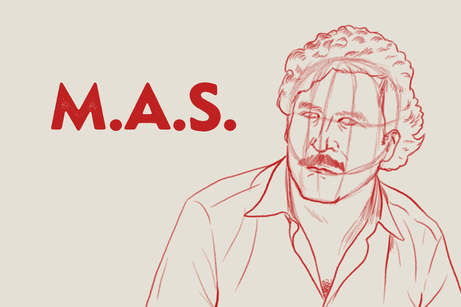
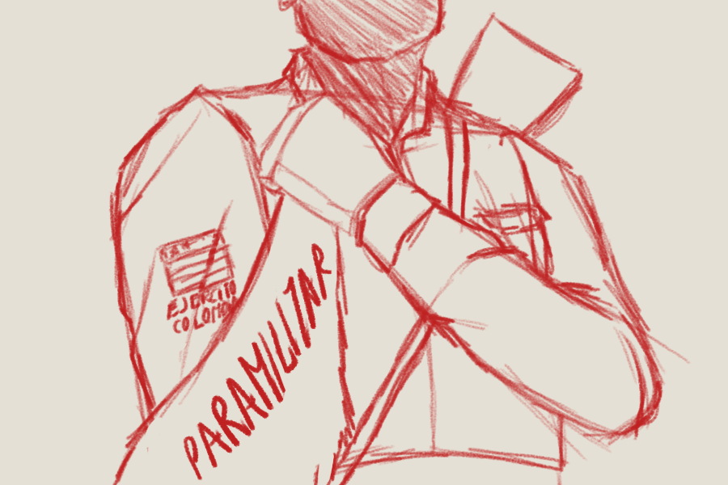

Colombian Armed Forces committed several massacres in the name of paramilitary groups in the 80’s
In 1982, when the government of the former President of Colombia, Julio Cesar Turbay ended, after four years of military persecution against leftist activists, several sectors of Colombian Army and Police did not agree with the proposal of the new president Belisario Betancur in the way to star talks peace with the comunist guerrillas.
The violence had already been escalating since 1981, with several massacres committed by the FARC guerrillas, but between 1982 and 1983 these crimes grew to levels not seen since the civil war that the country experienced in the 50’s. Most of them were perpetrated by self called paramilitary groups that said they defended against guerrillas.

The increase of massacres in Colombia and its relationship
between Colombian army and paramilitary groups
In 1982 and 1983, while President of Colombia, Berlisario Betancur started a peace process with
the guerrillas, Colombian military perpetrated severa massacres related with the origin of
paramilitary groups
Number of
massacres
120
Beginning of the peace
process between Betancur
government and left guerrillas
100
80
60
40
20
0
1970
1975
1980
1985
Year
1990
While President Betancur was talking with the guerrillas, this violence skyrocketed, especially in the Magdalena Medio region, a key area in the middle of the country, very close to the capital, Bogota. This was a region with a strong presence of trade unionists and peasant organizations fighting for access to land.
There, for example, in the small municipality of Cimitarra, which had no more than 12,000 inhabitants, 12 massacres were perpetrated in just two months, between April and May 1983. In all cases, those responsible for the crimes signed their names. of alleged paramilitary groups. In those months, the Colombian Army created a battalion in the same area. Several witnesses to the massacres point to the military as being responsible.
The massacres in the small town of Cimitarra increased with
the creation of a battalion of the Colombian army
After creation of Brigada 14 in the region of Magdalena Medio, 12 massacres were committed in
Cimitarra
Number of
massacres
5
At least 79 people were
killed in massacres
committed in this period
4
3
2
1
Massacres
Aug. 1982
Oct. 1982
Dic. 1982
Feb. 1983
Apr. 1983
Jun.1983
Aug. 1983
Oct. 1983
In many of these massacres, the murderers signed the walls with acronyms such as MAS (Death to Kidnappers). This was a group created by the head of the Medellin Cartel, Pablo Escobar, after the M-19 guerrilla kidnapped the daughter of one of his associates. The group dissolved only a few months later, after that guerrilla liberated it. Since then, the name MAS began to be used to call the paramilitary groups.
About 40 massacres committed in Colombia during those years have strong indications of having been perpetrated by the Army and the Police. Crimes committed, for example in the Urabá region, on the border with Panama, were attributed to paramilitary groups, when, in those years, there is no proof of their existence.

Colombian Armed Forces and the strong hind of
responsibility in massacres 1982-1983
Although it has not been proven judicially, there are strong indications of the direct authorship of
the military in these massacres, committed on behalf of paramilitary groups such as the MAS
Responsability confirmed by the CNMH
13 massacres
Strong hint of responsability
37
Without hint of responsability
6
In 1983, the Attorney General presented a report with around 150 names of alleged members of these paramilitary groups, of which around 60 were active military and police officers. An undetermined number were retired police and military personnel.
An example of these massacres was the one committed in the place known as Altos de Manila in the county of Remedios, in which 22 people died. Although the group that perpetrated the crimes called itself a paramilitary group, academic research has proven that they were actually committed by the military. This was the massacre with the highest number of deaths in two decades in Colombia.

Agente del Estado
Agente del Estado - Grupo Paramilitar
Grupo Paramilitar
Guerrilla
Otro ¿Cuál?
Grupo Armado
No Dirimido
Grupo Armado
No Identificado
Bandolerismo
Desconocido
Altos de Manila was the massacre
with the highest number of dead
people (22) between 1970 and 1984.
It was perpetrated by the
Colombian Army
20 Victims
15
10
5
1970
1975
1980
Year
Since 1983, schools appeared in which members of the Colombian armed forces, in complicity with businessmen, politicians and drug traffickers, taught civilians to turn them into war machines.
The number of massacres continued to rise during the following years. The small county of Cimitarra suffered a total of about 60 massacres until 1987.

250
Cimitarra was the county
with most massacres
from 1970 to 1984
200
Number of victims
150
100
50
0
0
10
20
30
Number of massacres